Supporting Figures
Selected figures that support the project story
This page is the appendix, not the first impression. It collects the strongest notebook-derived and HPC-derived visuals that help explain what currently works, what fails, and where the codec path breaks detector-facing behavior.
These are support figures, not a polished paper plate. Captions stay intentionally narrow and only make claims that the repository can already back up.
Reading Guide
How to interpret the gallery
- Track 1: use these figures to discuss geometry preservation and why detector-facing endpoint quality still collapses after reconstruction.
- Track 2: use these figures to show that the raw/basic RangeDet baseline is no longer the dominant failure source once the pipeline is repaired.
- Presentation stance: each caption is scoped to observable evidence and avoids claims that would require unpublished quantitative follow-up.
Track 1
Reconstruction and endpoint context
Qualitative panels extracted from executed notebook outputs.

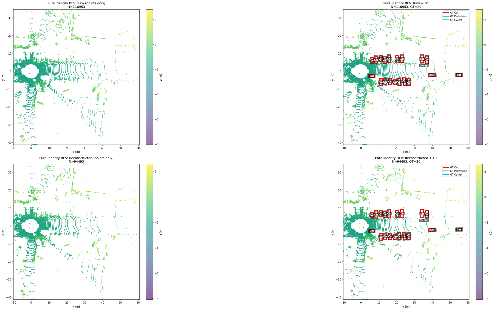
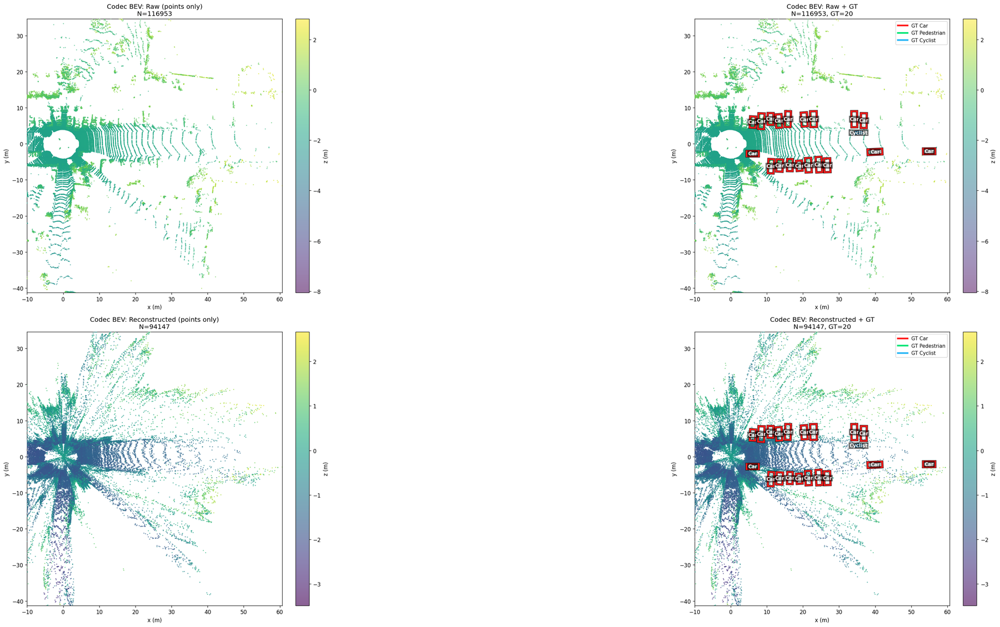

Track 2
RangeDet-oriented artifact diagnostics
Diagnostic panels generated from the repaired RangeDet evaluation workflow.
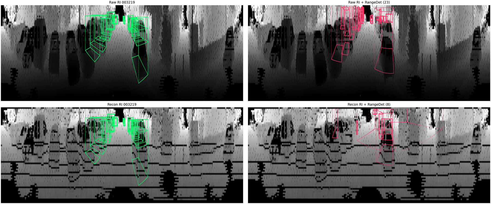
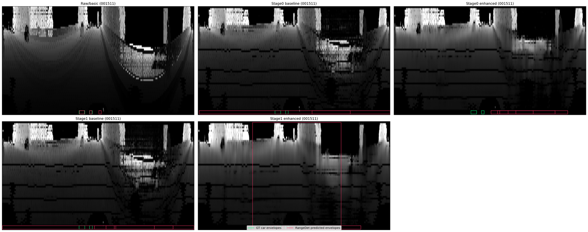
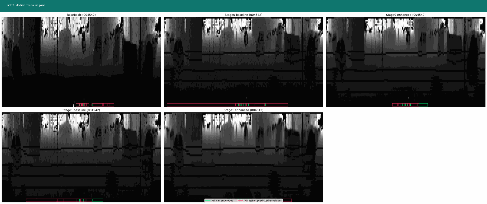
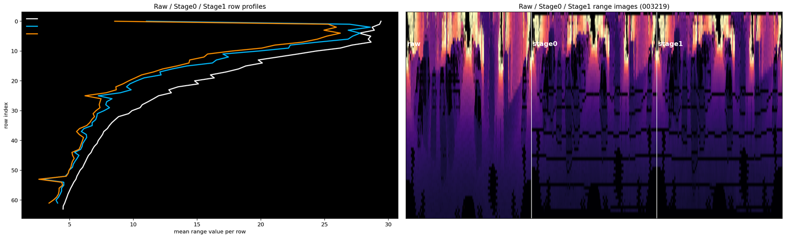
Track 2 Deep Dive
Detector matching and multi-case diagnostics
Additional March 17, 2026 exports pulled from the HPC workspace and converted into web-ready assets.
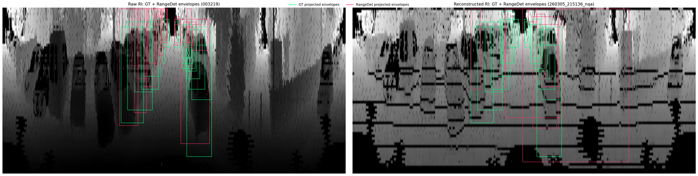
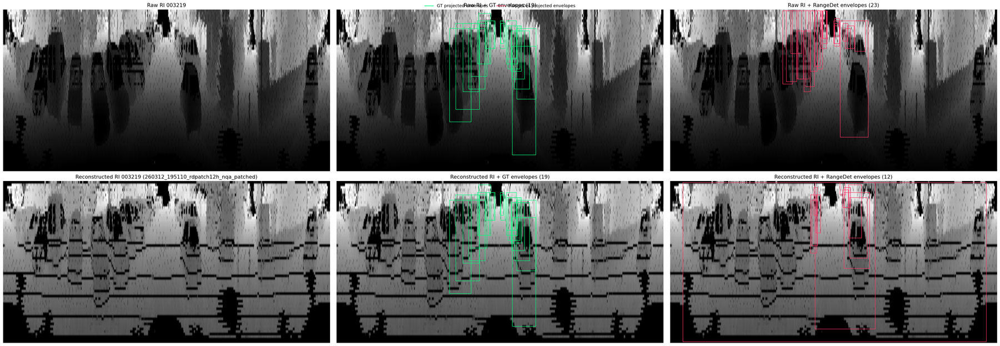
rangedet_analysis.executed.ipynb, this provides a reproducible raw-versus-reconstructed
overview with GT and detector envelopes in one place.


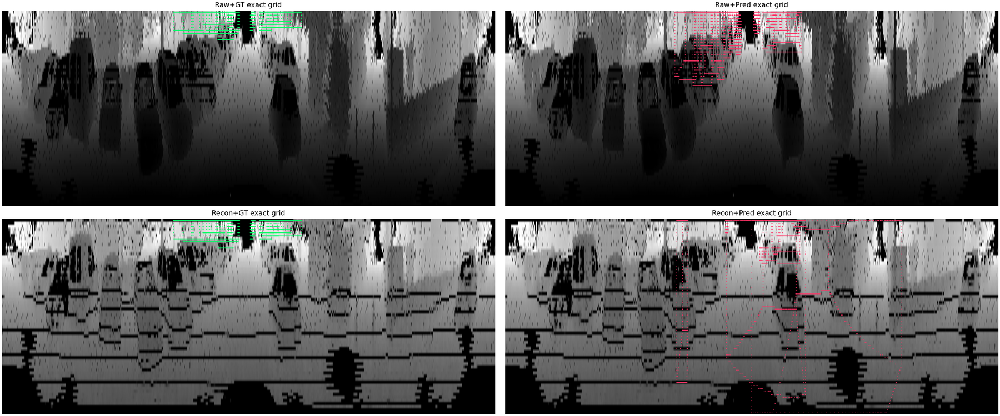
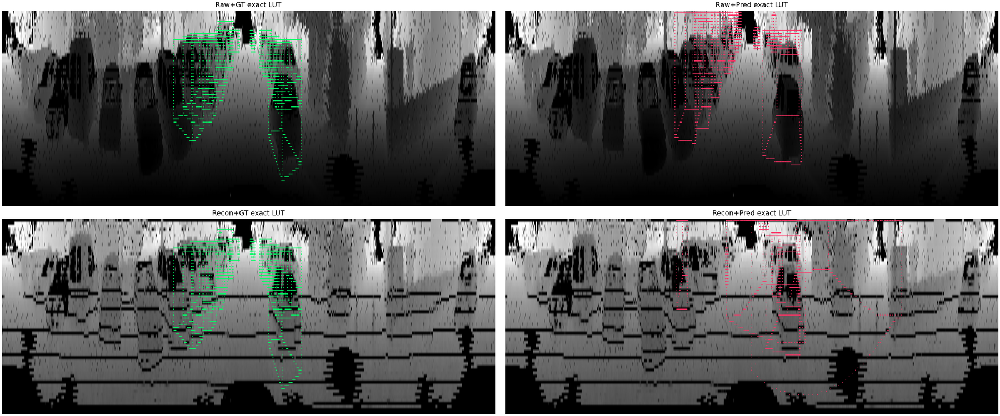
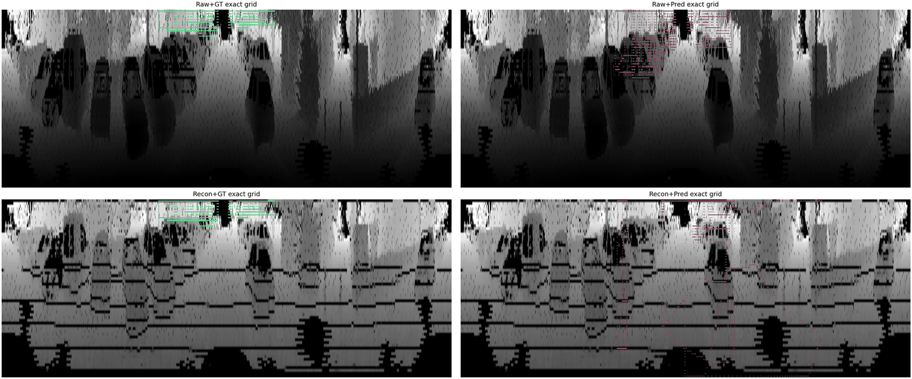
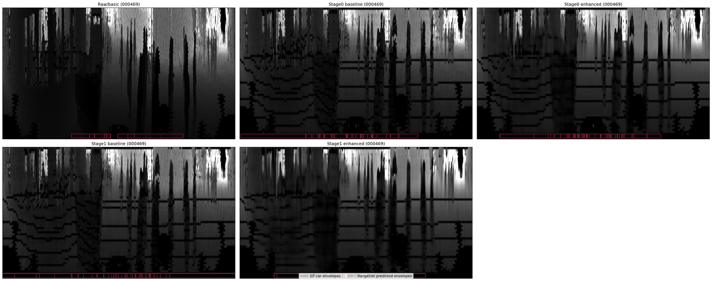
Asset Manifest
Referenced files in docs/assets
track1-pointpillar-endpoint-panel-web.pngtrack1-identity-bev-panel-web.pngtrack1-codec-bev-panel-web.pngtrack1-identity-vs-codec.giftrack2-rangedet-analysis-preview-web.pngtrack2-rootcause-worst-web.pngtrack2-rootcause-cycle.giftrack2-artifact-profiles-web.pngtrack2-cell5-latest-web.pngtrack2-rangedet-overview-panel-web.pngtrack2-rangedet-zoom-panel-web.pngtrack2-rangedet-overview-zoom.giftrack2-exactgrid-preview-web.pngtrack2-exactlut-preview-web.pngtrack2-grid-vs-lut.giftrack2-rootcause-spectrum.gif